This document describes how to use the SED-ML graphical editor plugin for SBSI, for the creation, viewing and editing of SED-ML files.
This editor is available under an MIT open source license:
From the File ->New menu. choose the option SED-ML->SED-ML editor :
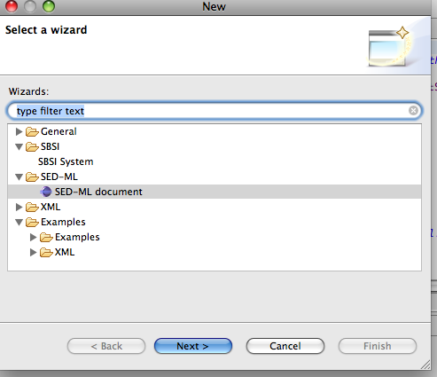
In the following dialog choose a parent folder in which the new file will be placed, and give it a name: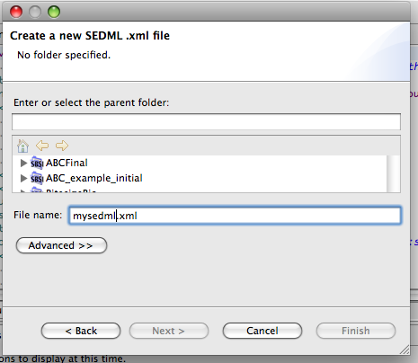
This will create a new SED-ML file and open the editor:
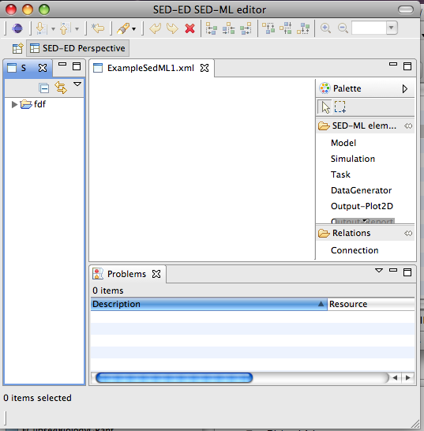
This section describes the use of the graphical editor to create components of a SED-ML document.
Standard editing operations are enabled in the editor such as :
Any element can have an HTML note added by selecting an element and choosing Add /Edit/View Note from the context menu. This will open a dialog like this:
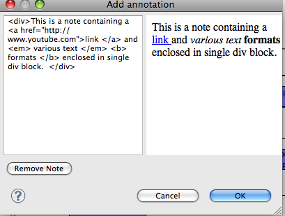
The HTML that you add should be contained in a single container element such as a div or body element. A preview of the HTML is displayed on the right-hand panel, and error messages inform if the HTML is badly formed.
Once you’ve added a note to an element, it will show a little icon to indicate this. E.g.,
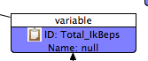
The Remove Note button removes a note from an element.
From the editor palette, choose ‘Simulation’ and then click on the canvas to add a Simulation object.
A dialog will pop up for you to configure the simulation. SED-ML level 1 version 1 is restricted to uniform time courses. By default, a simulation will defined as running for 10 time units, using a general ODE solver, with 100 output time points.
From the editor palette, choose ‘Model’ and then click on the canvas to add a Model object.
Choose the modelling language of your model, and its source. This can be a location on the file-system chosen from the file browser or you can enter a stable URN such as a MIRIAM identifier
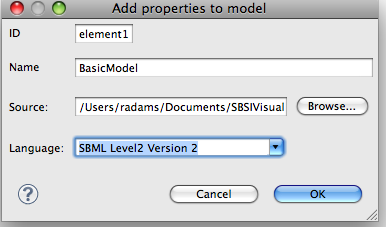
You can preview a model by clicking on the Preview Model button. This will be enbaled if the model itself can be retrieved based on the ‘source’ attribute of the SED-ML model element. Preview Model will apply all changes and show the model as an XML tree for you to browse to check that the changes are as you expect. You can also access this from within the ‘Edit Change’ dialog when you double click on a Change element.
In SED-ML, there are several method to apply changes to an XML based model:
In this editor, you can add a change to a model by choosing the Add Change context menu item when you have a model element selected:
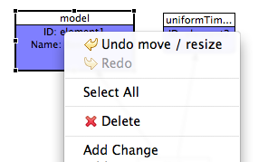
This opens a dialog:
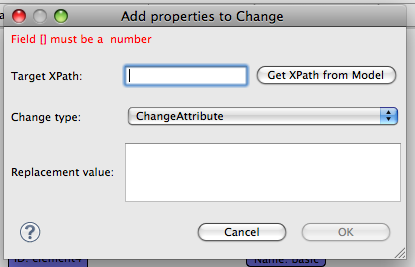
The Change type drop-down menu enables you to choose what sort of change you want to apply.
The Replacement Value text field is where you insert the changes to make.
If you choose to change an attribute, the replacement value should be a numerical value. If you choose to Add XML or Change XML, then the replacement value should be some well formed XML. If you choose Remove XML the content of the replacement value is irrelevant and is ignored.
The TargetXPath field is where you specifiy the XML to be changed, using an XPath expression. This can be added manually, or by using the Get XPath from Model feature. If this is enabled, it helps to create the XPath expressions from an XML view of your model. The button is enabled if the editor can get hold of the actual model, specifed in the source attribute of the Model element to which this change is being added.
Currently, two operations are supported by Get XPath from Model. Firstly, if you wish to change an attribute:
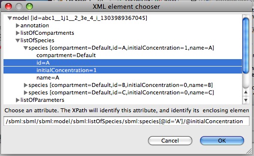
In the above example. the id attribute was selected first, then the initialConcentration attribute, which is what we want to change. The XPath expression is previewed in the bottom text field.
Secondly, if you choose to add/remove/change XML, choose an identifying attribute of the element which is to be the target of the modification, and an XPath expression will be generated. If the element you iwsh to target has no attributes, then the element is chosen with no identifiers inserted into the XPath expression, which should be sufficient if an element is unique within its parent element.
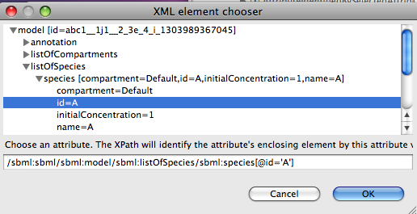
In the above example, we might have chosen this element to be removed.
XPath expressions must always be prefixed, in such a way that they can be mapped to a namespace when they are evaluated. In this editor, XPath prefixes are generated according to the following rules.
Task elements connect a Model to a Simulation. From the editor palette, choose ‘Task’ and then click on the canvas to add a Task object. Task elements need no mandatory configuration from a dialog, but must be connected to a Model and a Simulation to be valid.
E.g.,
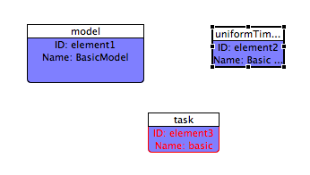
is invalid as the task is not connected. But in
the task is no longer highlighted in red, as it is connected correctly.
DataGenerator elements define one output of a simulation. To create a DataGenerator, from the editor palette, choose ‘DataGenerator’ and then click on the canvas to add a DataGenerator object.
In the dialog, you need to enter a mathematical expression for a column of data from the simulation. For example, to just specify unchanged output, enter the ID of the variable you want to display.
To define variable, select a DataGenerator element and choose Add Variable from the context menu.
A Variable is the only SED-ML data type in this editor whose ID is editable – this gives you the chance to use a meaningful ID ( so long as it is alphanumeric and unique in the SED-ML document ). The reason for this is that the variable and parameter names occurring in the maths section of a DataGenerator must be the IDs of Variable and Parameter elements. Variables can also refer to symbols. In SEDML L1V1, ‘Time’ is the only symbol. If ‘No symbol’ is chosen, you need to specify an XPath expression to locate the variable in the model whose value you want to display. As with Changes, if your model is accessible, the Get XPath From Model button will be enabled, which
helps generate the XPath expression for you.
Output elements define how the simulation results will be presented. To create a Output, from the editor palette, choose either ‘Plot2D ’ or ‘Report’ and then click on the canvas to add it.
If you create a Plot2d you will need to add Curve elements using the Add Curve menu item. When you create a Curve, it will first appear highlighted in red. You now need to connect the Curve to 2 DataGenerators, one for the X axis and one for the Y axis.
If you create a Report you will need to add Dataset elements using the Add Dataset menu item. When you create a Dataset, it will first appear highlighted in red. You now need to connect the Dataset to a DataGenerator element.
To edit an existing element, just double-click on the element to obtain the configuration dialog. You can undo /redo edits by clicking Ctrl-Z and Ctrl- Y, respectively.
SED-ED supports the proposed SED-ML archive format (SEDX) , described in appendix D of the SED-ML level 1 version 1 specification. This format bundles the SED-ML files and the models it needs in a single archive format.
Features include:
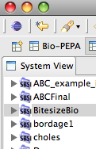
To open an existing SED-ML document using this editor, select it in the Resource View, and from the context menu, choose
Open->Open With->SED-ML editor
If the SED-ML document has been imported from another source, or not yet edited in the SED-ML Editor, you’ll be prompted for some layout options.
To automatically layout some or all elements, click on the drawing canvas, and from the context menu, choose Layout . This will layout all un-selected elements. So, to layout all elements, make sure no elements are selected in the editor. Be warned that auto-layout is not undoable, so only do it if you really want to!.
Layout runs in a background thread and can be stopped at any time by clicking cancel in the progress monitor ( the red square in the bottom right-hand corner of the screen-shot below).
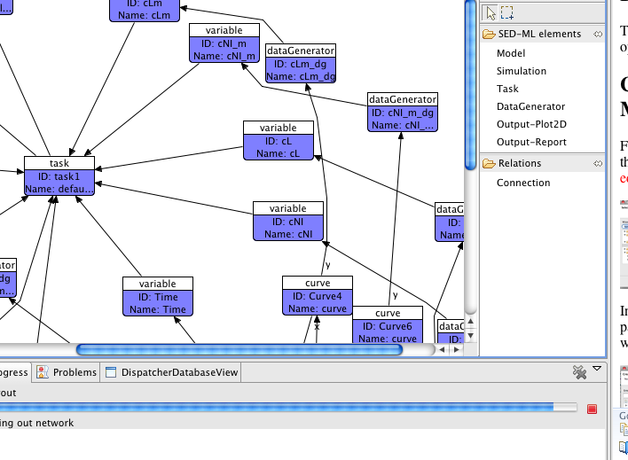Two sorts of relationships are represented by edges (connections ) in the SED-ED editor. Firstly, the reference relations specified in section 2.3.5 of the level1 version1 specification, namely:
Secondly, containment or aggregation relations, such as:
The reference relations need to be drawn explicitly using the Connection tool in the palette, whereas the aggregation relations are automatically added when a child element is added.
Any editor needs to provide freedom to enter data in a non-specified order, to be usable, while at the same time ensuring persisted data is not corrupt or meaningless. This section explains some of the levels of validity checking in a SED-ML document.
The editor allows for the creation of SED-ML data structures in memory that lack essential information, but any aberrant elements will not be persisted. For example, a Task icon that is not connected to a Model and a Simulation will not be saved to file.
These elements are highlighted in red in the editor.
A document may be syntactically valid but still useless – for example if XPath expressions don’t refer elements in a model properly, or if a model cannot be found from the information in a SED-ML Model element. If a model can be retrieved, feedback will be given if an XPath expression does not identify any model element. Other errors are reported in the ‘Problems’ view or in the expanded tree view of a SED-ML document in the System View. E.g.,
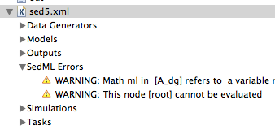
This is the highest level of validation, and this is not checked in SED-ED. Such validation would include, for example, that a simulation algorithm is available which supports the modelling language specified in the SED-ML document.